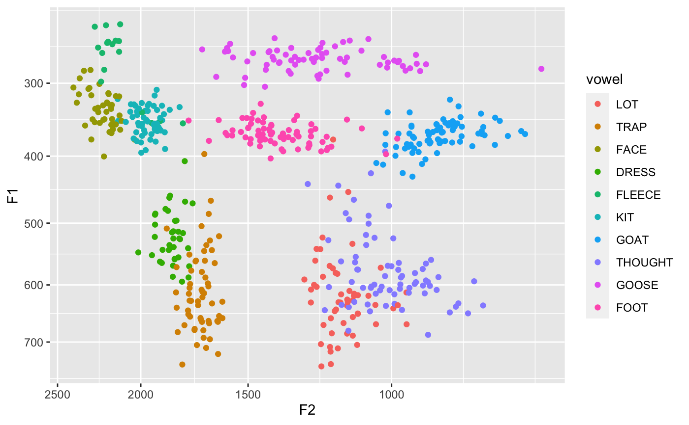

Transforms the axes of a ggplot into the bark scale. The data is still plotted in Hz. If you want to plot the data in Barks themselves, transform the data beforehand and plot normally. For an example of plots using this scale, see Harrington et al. (2000).
scale_x_bark(..., rev = TRUE) scale_y_bark(..., rev = TRUE)
| ... | Parameters passed on to |
|---|---|
| rev | Should the axis be flipped? Or rather, would you normally use
|
Harrington, Jonathan, Sallyanne Palethorpe, and Catherine Watson. "Monophthongal Vowel Changes in Received Pronunciation: An Acoustic Analysis of the Queen’s Christmas Broadcasts." Journal of the International Phonetic Association 30, no. 1–2 (2000): 63–78. https://doi.org/10.1017/S0025100300006666
library(ggplot2) vowels <- read.csv("http://joeystanley.com/data/joey.csv") # A baseline plot using linear scales ggplot(vowels, aes(F2, F1)) + geom_point() + scale_x_reverse() + scale_y_reverse()# Compare that to this which uses barks. ggplot(vowels, aes(F2, F1)) + geom_point() + scale_x_bark() + scale_y_bark()